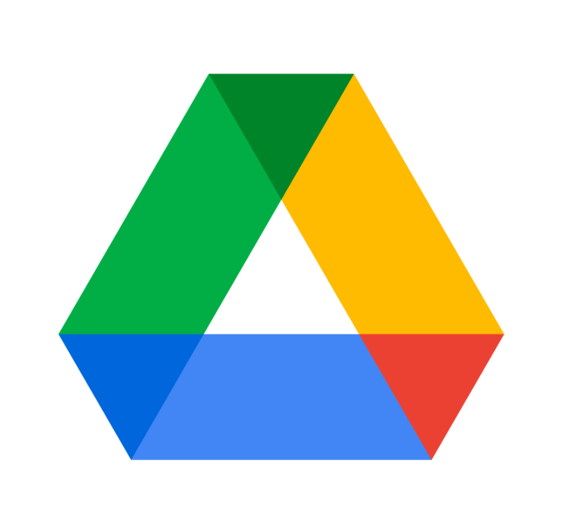
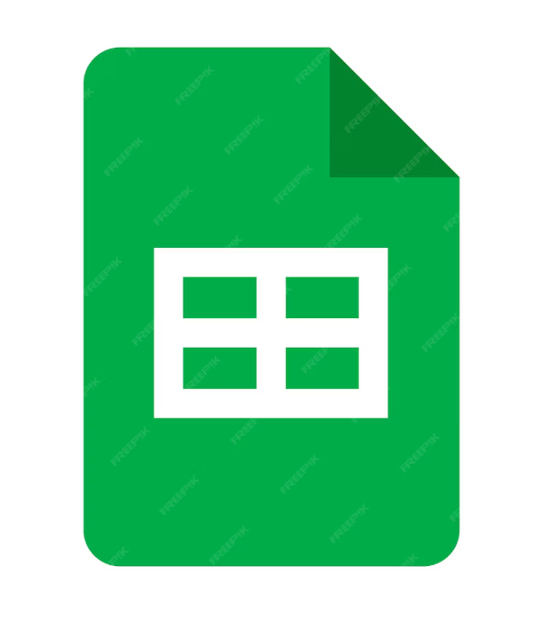

Ամպային տեխնոլոգիաները լայնորեն կիրառվում են կրթական ոլորտում՝ ուսուցման գործընթացի կազմակերպման և դասավանդման արդյունավետության բարձրացման նպատակով։

Ամպային դասավանդման գործիքները հնարավորություն են տալիս կազմակերպել դասընթացներ, տարածել ուսումնական նյութեր և ապահովել օնլայն համագործակցում։

Այս բաժնում ներկայացված են հիմնական ամպային գործիքները, որոնք կիրառելի են ուսումնական գործընթացում։